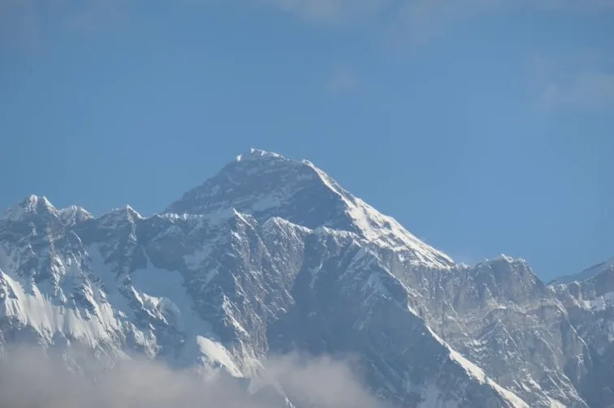
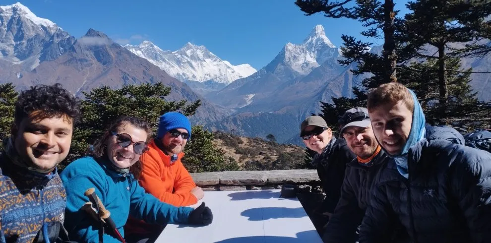

1. What Is the Everest View Trek & Why Is It So Cost-Effective?
Not everyone has the 14 to 16 vacation days, ironclad high-altitude endurance, or desire to sleep in sub-zero plywood teahouses required for the full push to Everest Base Camp (5,364m).
The Everest View Trek is the ultimate alternative. Spanning typically 5 to 7 days round-trip from Kathmandu, the route follows the Dudh Koshi river gorge through Phakding, climbs the Hillary Bridge into Namche Bazaar (3,440m), loops through the traditional Sherpa villages of Khumjung and Khunde (3,790m), visits the world-famous terrace of the Hotel Everest View (3,880m), and optionally extends to the spiritual sanctuary of Tengboche Monastery (3,867m) before retracing steps to Lukla.
From a financial perspective, this route is dramatically more accessible:
- Half the Trail Days: You spend 5 to 7 days paying for teahouses, guides, and meals instead of 12 to 14 days.
- Lower Food Transportation Markups: Yaks and porters only have to haul food as far as Namche or Tengboche (35km from Lukla) rather than 65km to Gorak Shep, saving you 25% to 40% on daily meals.
- Milder Temperatures & Simpler Gear: Nighttime temperatures rarely drop below -5°C, meaning you can use standard 3-season hiking clothing rather than purchasing expensive -20°C down expedition suits.
- Virtually Zero Emergency Evacuation Risk: Because the maximum sleeping elevation is Namche (3,440m) or Tengboche (3,867m), severe Acute Mountain Sickness (HAPE/HACE) is extraordinarily rare.
2. Master Cost Breakdown: Total Budget Tiers (Budget, Standard, Luxury)
Your total expense depends on your preferred travel style, accommodation comfort, and level of logistical support. Here is a side-by-side comparison of the three primary budget tiers for 2026–2027:
| Budget Tier | Estimated Cost (USD) | Accommodations | Meals & Inclusions | Guide & Support | Ideal For |
|---|---|---|---|---|---|
| Budget / Independent Guide | $650 – $800 | Standard Teahouse Twin Rooms (Shared bathroom) | Pay-as-you-go meals ($25–$30/day) | Licensed Sherpa guide hired directly; no porter | Backpackers, solo adventurers with light packs |
| Standard Agency Package (Top Pick) | $850 – $1,150 | Best available local teahouses / attached bathrooms in Namche | All 3 daily meals + hot drinks + Lukla flights + permits | Licensed English-speaking Guide + dedicated Porter (1:2 ratio) | Couples, families, first-time Himalayan trekkers |
| Deluxe Heritage Lodge Package | $2,200 – $3,800 | Yeti Mountain Home / Hotel Everest View luxury suites | A la carte multi-course dining + wine + heated rooms + electric blankets | Senior IFMGA/NMA Guide + private porter team + private transfers | Luxury travelers, honeymooners, corporate retreats |
While an unguided trek appears cheaper on paper, hiring a licensed agency package eliminates airport transfer stress, guarantees fixed teahouse reservations during peak autumn/spring, and provides a guaranteed helicopter rescue dispatch deposit without upfront credit card freezes.
3. Flight Costs & Ramechhap Transit (Kathmandu/Ramechhap ↔ Lukla)

Regardless of whether you hike for 5 days or 25 days, the domestic flight into Lukla is an unavoidable fixed expense for anyone entering the upper Khumbu.
Flight Ticket Pricing (2026–2027)
- Foreign Travelers (Non-SAARC): Approx. $217 USD one-way ($434 round-trip) for Kathmandu ↔ Lukla; approx. $185 USD one-way ($370 round-trip) for Ramechhap ↔ Lukla.
- SAARC Nationals (India, etc.): Approx. NPR 15,500 one-way ($115 USD).
- Nepali Citizens: Approx. NPR 6,500 one-way ($50 USD).
Ground Transit to Ramechhap
- During peak autumn (Oct–Nov) and spring (Mar–May), flights operate out of Manthali Airport in Ramechhap.
- Shared Tourist Van / HiAce: $25 to $35 USD per person (one-way).
- Private 4WD Scorpio Jeep: $150 to $180 USD total per vehicle (seats up to 5 comfortably).
- Agency Inclusive: When booking a package with Igloo Himalaya Treks, private comfortable tourist transfers between Kathmandu and Ramechhap are fully included.
4. Mandatory Permits & Conservation Fees in 2027
Even though the Everest View Trek does not go all the way to Base Camp, it enters Sagarmatha National Park and traverses the Khumbu Pasang Lhamu Rural Municipality, requiring the exact same official permits as a full EBC expedition:
- Khumbu Pasang Lhamu Rural Municipality Entry Permit:
- Cost: NPR 3,000 (~$23 USD) per foreign national.
- Payable in cash at the municipal entry counter at Lukla airstrip or Toktok.
- Sagarmatha National Park Entry Permit:
- Cost: NPR 3,000 + 13% VAT = NPR 3,390 (~$26 USD) per foreign national (NPR 1,500 + VAT for SAARC nationals).
- Obtained either at the Nepal Tourism Board office in Kathmandu or directly at the park checkpost in Monjo.
- TIMS Card Status: The Trekkers' Information Management System (TIMS) card is NOT required for the Everest region, as the Khumbu Pasang Lhamu Municipality operates its own independent digital permit system.
Total Permit Cost: Exactly NPR 6,390 (~$49 USD) per person. Keep both paper permits and their digital receipts accessible in your daypack, as you must present them at police and military checkposts in Lukla, Monjo, and Namche.
Both the Khumbu Pasang Lhamu municipal counter at Lukla and the Sagarmatha National Park entry post in Monjo strictly require payment in cash (NPR). Credit cards and foreign currencies are not accepted at trailside checkpoints.
5. Teahouse Accommodation Costs Along the Everest View Route

One of the greatest advantages of the Everest View Trek is that you stay exclusively in lower-altitude Sherpa villages where lodge infrastructure is vastly superior to the spartan outposts of Lobuche and Gorak Shep.
| Location & Village | Standard Twin Room (Shared Bath) | Ensuite Room (Private Western Toilet/Shower) | Luxury Heritage Lodge Suite |
|---|---|---|---|
| Lukla (2,846m) | $7 – $10 USD | $25 – $45 USD | $180 – $250 USD (YMH Lukla) |
| Phakding / Monjo (2,610m – 2,835m) | $5 – $8 USD | $20 – $35 USD | $180 – $250 USD (YMH Monjo) |
| Namche Bazaar (3,440m) | $7 – $15 USD | $30 – $60 USD | $180 – $260 USD (YMH Namche) |
| Khumjung Village (3,790m) | $6 – $10 USD | $20 – $35 USD | N/A |
| Syangboche Ridge (3,880m) | N/A | N/A | $250 – $350 USD (Hotel Everest View) |
| Tengboche Monastery (3,867m) | $8 – $12 USD | $30 – $45 USD (Deboche) | $150 – $220 USD (Rivendell Lodge) |
6. Food & Daily Dining Expenses: The Lower Khumbu Advantage

Because food only needs to be transported as far as Namche Bazaar (one day's walk from Lukla), meal prices on the Everest View Trek are 25% to 40% lower than in the upper high-altitude glacial settlements.
| Meal / Item | Typical Cost (USD) | Popular Selections |
|---|---|---|
| Breakfast | $5 – $8 USD | Oatmeal porridge with honey, Tibetan bread with jam, 2 eggs, hot tea |
| Lunch | $7 – $10 USD | Vegetable Dal Bhat (unlimited refills), egg fried noodles, vegetable momos |
| Dinner | $8 – $12 USD | Sherpa stew (Syakpa), garlic soup, vegetable macaroni with yak cheese |
| Hot Drinks & Water (Daily) | $6 – $10 USD | Ginger lemon honey tea, black coffee, 2 liters of boiled water |
Total Daily Food Budget: An independent trekker should budget approximately $28 to $38 USD per day for three generous meals, morning snacks, and hot beverages.
7. Guide & Porter Daily Rates & Tipping Guidelines
Under Nepalese trekking regulations, foreign trekkers are required to hike with a licensed guide. Even for a short trek, having an experienced Sherpa guide enriches your journey tenfold through storytelling, cultural translation in monasteries, and safe pacing.
Daily Wages (2026–2027 Standard)
- Licensed English-Speaking Sherpa Guide: $30 to $35 USD per day. Includes guide salary, meals, lodging, and mandatory government medical/rescue insurance.
- Trekking Porter: $20 to $25 USD per day. Carries up to 20kg of duffel bags (serving 2 trekkers).
- Porter-Guide (Dual Role): $25 to $28 USD per day. Carries up to 10kg while providing basic conversational navigation.
Tipping Etiquette
- Tipping is a standard and deeply appreciated practice in the Himalayas.
- For Your Guide: $12 to $18 USD per day from the entire group (e.g., $70 to $100 total for a 6-day trek).
- For Your Porter: $8 to $12 USD per day from the group (e.g., $50 to $70 total for a 6-day trek).
- Tips are traditionally presented in Nepalese Rupees (NPR) in an envelope during the farewell dinner in Lukla on the final evening.
8. Luxury Upgrades: Hotel Everest View & Yeti Mountain Home Lodges

For travelers seeking world-class comfort in the high mountains, the Everest View Trek is uniquely suited for a luxury lodge safari:
- Hotel Everest View (Syangboche, 3,880m): Rooms cost approximately $280 to $380 USD per night (double occupancy, including breakfast). Every room features floor-to-ceiling windows facing Mount Everest, en-suite bathrooms with hot pressurized water, electric blankets, and optional supplemental oxygen pumped into the room for effortless sleep.
- Yeti Mountain Home (YMH) Chain: High-end luxury heritage lodges in Lukla, Phakding, Monjo, and Namche Bazaar. Rooms cost roughly $180 to $260 USD per night and feature polished teak wood floors, Khumbu stone fireplaces, heated beds, private bathrooms, and gourmet international menus.
- Helicopter Return Upgrade: Instead of hiking back from Namche to Lukla, you can charter a private helicopter to fly directly from the Syangboche airstrip or Namche helipad back to Kathmandu for ~$1,800 to $2,400 USD (or ~$500/seat sharing).
9. Equipment Rental & Gear Expenses: The Budget Advantage
Because the Everest View Trek stays below 3,900 meters and spends nights in heated village lodges, you do not need to invest hundreds of dollars in extreme mountaineering gear:
- Sleeping Bag: A standard 3-season sleeping bag comfort rated to -5°C (23°F) is completely adequate (compared to the -20°C bag needed for Gorak Shep). Can be rented in Thamel for just $1.00 to $1.50 USD per day.
- Down Jacket: A mid-weight 600–700 fill down puffy or heavy fleece is sufficient for evenings in Namche. If needed, heavy down jackets rent in Kathmandu for $1.50 per day.
- Footwear: Standard mid-cut hiking boots or sturdy trail running shoes with good traction are completely suitable for the well-maintained stone steps between Lukla and Tengboche. Microspikes and crampons are completely unnecessary.
10. Incidental On-Trail Expenses: Showers, Device Charging & Connectivity

Another major cost saving on the Everest View Trek is incidental fees:
| Service / Amenity | Everest View Route Cost | Upper EBC Route Cost | Savings / Tips |
|---|---|---|---|
| Hot Gas / Solar Shower | $3 – $5 USD | $8 – $10 USD | Showers in Namche are clean, warm, and comfortable |
| Smart Phone Battery Charge | Free – $2 USD | $5 – $6 USD | Many Namche lodges offer free dining-room charging sockets |
| Mobile Data (Ncell / NTC) | $10 for 20 GB 4G | No 4G past Pangboche | Excellent 4G LTE signals throughout Lukla, Phakding, and Namche |
| Boiled Drinking Water (1L) | $1.50 – $2.00 USD | $4.00 – $4.50 USD | Save by using a portable squeeze filter or Aquatabs tablets |
Although Namche Bazaar has several ATMs (Nabil Bank and Prabhu Bank), they frequently run out of physical cash or suffer satellite connection blackouts. Always withdraw all your planned trek cash in Kathmandu before boarding your flight to Lukla.
11. Comprehensive Day-by-Day Expense Ledger (Sample 6-Day Itinerary)
Here is an exact itemized expense ledger for an independent trekker hiking a standard 6-day Everest View Itinerary with a guide:
| Trek Day | Route & Target | Lodging Cost | Food & Hot Drinks | Guide Fee Share | Daily Total |
|---|---|---|---|---|---|
| Day 01 | Fly Lukla (2,846m) & Trek to Phakding (2,610m) | $7 USD | $26 USD | $35 USD | $68 USD |
| Day 02 | Phakding to Namche Bazaar (3,440m) | $12 USD | $32 USD | $35 USD | $79 USD |
| Day 03 | Hotel Everest View & Khumjung (3,880m) | $12 USD | $35 USD (incl. cafe) | $35 USD | $82 USD |
| Day 04 | Namche to Tengboche Monastery (3,867m) | $10 USD | $34 USD | $35 USD | $79 USD |
| Day 05 | Tengboche to Namche Bazaar (3,440m) | $12 USD | $30 USD | $35 USD | $77 USD |
| Day 06 | Namche Bazaar to Lukla (2,846m) | $10 USD | $28 USD | $35 USD | $73 USD |
| Subtotal Trail Operational Expenses: | $458 USD | ||||
| Add Fixed Permits (Sagarmatha NP + Khumbu Municipality): | +$49 USD | ||||
| Add Round-Trip Domestic Flights (Ramechhap ↔ Lukla): | +$370 USD | ||||
| Estimated Total 6-Day Independent Budget (Solo): | $877 USD | ||||
Note: If two trekkers share the guide fee ($35/day), the total cost per person drops to approximately $772 USD!
12. Everest View Trek vs. Full EBC: Comprehensive Financial & Time Comparison

Is the Everest View Trek worth it compared to hiking all the way to Base Camp? Here is how the two trips compare across budget, effort, and visual rewards:
| Factor | Everest View Trek (Panorama) | Classic Everest Base Camp (EBC) |
|---|---|---|
| Total Duration | 5 to 7 Days | 12 to 14 Days |
| Typical Package Cost | $850 – $1,150 USD | $1,450 – $1,850 USD |
| Maximum Altitude | 3,880m (Hotel Everest View / Tengboche) | 5,545m (Kala Patthar) / 5,364m (EBC) |
| Difficulty Rating | Moderate (Suitable for fit beginners/families) | Strenuous (Extreme altitude & cold) |
| Everest Visibility | Outstanding: Clear, full pyramid views from Hotel Everest View & Tengboche | Blocked at Base Camp; Visible only from Kala Patthar & early ridges |
| Teahouse Comfort | High (Hot showers, bakeries, western toilets) | Basic / Rustic (Unheated rooms, frozen bucket toilets) |
13. Top 5 Money-Saving Sherpa Tips for the Everest View Trek
Save an extra $150 to $200 on your expedition with these insider recommendations:
- 1. Hike as a Pair or Small Group: The cost of your licensed guide ($30–$35/day) and porter ($22–$25/day) is split across your party. Two people trekking together immediately save roughly $150 each compared to a solo trekker.
- 2. Use a Mobile 4G SIM Instead of Wi-Fi Cards: Don't buy $20 Everest Link cards. Buy an NTC or Ncell SIM card in Kathmandu with a 20GB data pack for $10. Cell towers provide strong 4G signals in Lukla, Phakding, Monjo, Namche Bazaar, and Khumjung.
- 3. Bring a 20,000mAh Power Bank: Teahouses charge $2 to $4 to charge phones. A pre-charged power bank covers all your smartphone and camera needs for 6 days.
- 4. Eat Dal Bhat for Lunch and Dinner: Dal Bhat includes unlimited free refills of steamed rice, lentil soup, and vegetable curry, making it the most cost-effective and nutritious fuel on the mountain.
- 5. Book Directly with a Local Sherpa Agency: Booking through third-party western travel portals adds a 30% to 50% commission markup. Booking directly with Igloo Himalaya Treks ensures your money goes directly to local Sherpa guides and porters while securing the best possible price.
Standard high-altitude mountaineering insurance policies covering up to 6,000m (required for EBC) cost upwards of $200–$350. Because the Everest View Trek stays below 4,000m, standard adventure travel insurance policies covering trekking up to 4,000m (such as World Nomads Standard or Allianz) cost only $60–$110, saving you over 60% on insurance premiums.
14. Frequently Asked Questions: Everest View Trek Cost & Logistics
How much does the Everest View Trek cost in total?
For a standard, all-inclusive 6 to 7-day guided package with Igloo Himalaya Treks, expect to pay between $850 and $1,150 USD per person. This covers round-trip domestic flights to Lukla, licensed guide, porter, all permits, teahouse accommodation, and three meals daily. Independent budget trekkers can complete the route for roughly $650 to $800 USD.
Can you actually see Mount Everest on the Everest View Trek?
Yes, spectacularly well! In fact, the views of Mount Everest from the Hotel Everest View terrace (3,880m) and Tengboche Monastery (3,867m) are vastly superior to what you see at Everest Base Camp itself (where Nuptse blocks the summit). You get an unobstructed view of the entire southern summit pyramid and ice plume.
How many days does the Everest View Trek take?
The trek takes between 5 and 7 days round-trip from Kathmandu. A popular 6-day itinerary includes Day 1: Fly Lukla & trek to Phakding; Day 2: Phakding to Namche Bazaar; Day 3: Namche, Hotel Everest View & Khumjung; Day 4: Namche to Tengboche Monastery; Day 5: Tengboche to Namche; Day 6: Namche to Lukla (fly out the following morning).
What permits are needed for the Everest View Trek?
You need two permits: the Khumbu Pasang Lhamu Rural Municipality Permit (NPR 3,000 / ~$23 USD) and the Sagarmatha National Park Entry Permit (NPR 3,390 / ~$26 USD). Total permit cost is approximately $49 USD per person.
Is the Everest View Trek suitable for beginners and children?
Yes, absolutely. Because the trek reaches a maximum elevation of only 3,880m and features comfortable teahouses with heated dining rooms, it is widely considered the best family-friendly and beginner-friendly trek in the Khumbu region. Only moderate walking fitness is required.
How much cash should I bring on the Everest View Trek?
If you are on an all-inclusive package, bring approximately $100 to $150 USD in Nepalese Rupees (NPR 15,000 to 20,000) for hot showers, bakery treats, coffee, charging, and guide/porter tips. Independent trekkers should carry at least NPR 35,000 in cash.
How much does a night at Hotel Everest View cost?
A room at the luxury Hotel Everest View (3,880m) typically costs between $280 and $380 USD per night (double occupancy including breakfast). However, any trekker can visit the hotel terrace during the daytime for morning coffee or tea without staying overnight!
What is the best month to do the Everest View Trek?
The best months are October and November in Autumn (crystal clear blue skies, sharp mountain vistas) and March, April, and May in Spring (warmer weather, vibrant blooming rhododendron forests). Winter (December–February) is also very pleasant for this lower-elevation route with crystal clear skies and few crowds.

Ready to Experience the Himalayas?
Whether you are preparing for high-altitude trekking, cultural circuits, or alpine summit expeditions, start planning a bespoke journey tailored to your fitness, travel season, and style.